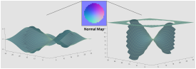

Selected Publications
2021 (9)
FedDG: Federated Domain Generalization on Medical Image Segmentationvia Episodic Learning in
Continuous Frequency Space.
Quande Liu, Cheng Chen, Jing Qin, Qi Dou, Pheng Ann Heng.
IEEE Conference on Computer Vision and Pattern Recognition (CVPR), 2021.
Continuous Frequency Space.
Quande Liu, Cheng Chen, Jing Qin, Qi Dou, Pheng Ann Heng.
IEEE Conference on Computer Vision and Pattern Recognition (CVPR), 2021.
Federated Deep Learning for Detecting COVID-19 Lung Abnormalities in CT: A Privacy-preserving
Multinational Validation Study.
Qi Dou, Tiffany Y So, Meirui Jiang, Quande Liu, Varut Vardhanabhuti, Georgios Kaissis, Zeju Li, Weixin Si, Heather Lee, Kevin Yu, Zuxin Feng, Li Dong, Egon Burian, Friederike Jungmann, Rickmer Braren, Marcus Makowski, Bernhard Kainz, Daniel Rueckert, Ben Glocker*, Simon CH Yu*, Pheng Ann Heng*. [code]
npj Digital Medicine, Nature Publishing Group, 2021.
Multinational Validation Study.
Qi Dou, Tiffany Y So, Meirui Jiang, Quande Liu, Varut Vardhanabhuti, Georgios Kaissis, Zeju Li, Weixin Si, Heather Lee, Kevin Yu, Zuxin Feng, Li Dong, Egon Burian, Friederike Jungmann, Rickmer Braren, Marcus Makowski, Bernhard Kainz, Daniel Rueckert, Ben Glocker*, Simon CH Yu*, Pheng Ann Heng*. [code]
npj Digital Medicine, Nature Publishing Group, 2021.
Relational Graph Learning on Visual and Kinematics Embeddings for Accurate Gesture Recognition in Robotic Surgery.
Yonghao Long, Jieying Wu, Bo Lu, Yueming Jin, Mathias Unberath, Yun-Hui Liu, Pheng Ann Heng, Qi Dou.
International Conference on Robotics and Automation (ICRA), 2021.
Yonghao Long, Jieying Wu, Bo Lu, Yueming Jin, Mathias Unberath, Yun-Hui Liu, Pheng Ann Heng, Qi Dou.
International Conference on Robotics and Automation (ICRA), 2021.
Data-driven Holistic Framework for Automated Laparoscope Optimal View Control with
Learning-based Depth Perception.
Bin Li, Bo Lu, Yiang Lu, Qi Dou, Yun-Hui Liu.
International Conference on Robotics and Automation (ICRA), 2021.
Learning-based Depth Perception.
Bin Li, Bo Lu, Yiang Lu, Qi Dou, Yun-Hui Liu.
International Conference on Robotics and Automation (ICRA), 2021.
One to Many: Adaptive Instrument Segmentation via Meta Learning and Dynamic Online Adaptation in
Robotic Surgical Videos.
Zixu Zhao, Yueming Jin, Bo Lu, Chi-Fai Ng, Qi Dou, Yun-Hui Liu, Pheng Ann Heng.
International Conference on Robotics and Automation (ICRA), 2021.
Robotic Surgical Videos.
Zixu Zhao, Yueming Jin, Bo Lu, Chi-Fai Ng, Qi Dou, Yun-Hui Liu, Pheng Ann Heng.
International Conference on Robotics and Automation (ICRA), 2021.
Learning Deep Nets for Gravitational Dynamics with Unknown Disturbance through Physical Knowledge Distillation: Initial Feasibility Study.
Hongbin Lin, Qian Gao, Xiangyu Chu, Qi Dou, Anton Deguet, Peter Kazanzides, and K. W. Samuel Au.
IEEE Robotics and Automation Letters (RA-L) and ICRA 2021.
Hongbin Lin, Qian Gao, Xiangyu Chu, Qi Dou, Anton Deguet, Peter Kazanzides, and K. W. Samuel Au.
IEEE Robotics and Automation Letters (RA-L) and ICRA 2021.
Future Frame Prediction for Robot-assisted Surgery.
Xiaojie Gao, Yueming Jin, Zixu Zhao, Qi Dou, Pheng Ann Heng.
International Conference on Information Processing in Medical Imaging (IPMI), 2021.
Xiaojie Gao, Yueming Jin, Zixu Zhao, Qi Dou, Pheng Ann Heng.
International Conference on Information Processing in Medical Imaging (IPMI), 2021.
(Oral)
FedBN: Federated Learning on Non-IID Features via Local Batch Normalization.
Xiaoxiao Li, Meirui Jiang, Xiaofei Zhang, Michael Kamp, Qi Dou. [code]
International Conference on Learning Representations (ICLR), 2021.
Xiaoxiao Li, Meirui Jiang, Xiaofei Zhang, Michael Kamp, Qi Dou. [code]
International Conference on Learning Representations (ICLR), 2021.
Edge-Aware Pyramidal Deformable Network for Unsupervised Registration of Brain MR Images.
Yiqin Cao, Zhenyu Zhu, Yi Rao, Chenchen Qin, Di Lin, Qi Dou, Dong Ni, Yi Wang.
Frontiers in Neuroscience, 2021.
Yiqin Cao, Zhenyu Zhu, Yi Rao, Chenchen Qin, Di Lin, Qi Dou, Dong Ni, Yi Wang.
Frontiers in Neuroscience, 2021.
2020 (19)
Contrastive Cross-Site Learning with Redesigned Net for COVID-19 CT Classification.
Zhao Wang, Quande Liu, Qi Dou. [code]
IEEE Journal of Biomedical and Health Informatics (JBHI), 2020.
Zhao Wang, Quande Liu, Qi Dou. [code]
IEEE Journal of Biomedical and Health Informatics (JBHI), 2020.
Joint Affine and Deformable 3D Networks for Brain MRI Registration.
Zhenyu Zhu, Yiqin Cao, Chenchen Qin, Yi Rao, Lin Di, Qi Dou , Dong Ni, Yi Wang.
Medical Physics, 2020.
Zhenyu Zhu, Yiqin Cao, Chenchen Qin, Yi Rao, Lin Di, Qi Dou , Dong Ni, Yi Wang.
Medical Physics, 2020.
Cascaded Robust Learning at Imperfect Labels for Chest X-ray Segmentation.
Cheng Xue, Qiao Deng, Xiaomeng Li, Qi Dou, Pheng Ann Heng.
Medical Image Computing and Computer Assisted Intervention (MICCAI), 2020.
Cheng Xue, Qiao Deng, Xiaomeng Li, Qi Dou, Pheng Ann Heng.
Medical Image Computing and Computer Assisted Intervention (MICCAI), 2020.
Shape-aware Meta-learning for Generalizing Prostate MRI Segmentation to Unseen Domains.
Quande Liu, Qi Dou, Pheng Ann Heng. [code] [multi-site data]
Medical Image Computing and Computer Assisted Intervention (MICCAI), 2020.
Quande Liu, Qi Dou, Pheng Ann Heng. [code] [multi-site data]
Medical Image Computing and Computer Assisted Intervention (MICCAI), 2020.
Image-level Harmonization of Multi-Site Data using Image-and-Spatial Transformer Networks.
R Robinson, Q Dou , DC Castro, K Kamnitsas, M de Groot, RM Summers, D Rueckert, B Glocker.
Medical Image Computing and Computer Assisted Intervention (MICCAI), 2020.
R Robinson, Q Dou , DC Castro, K Kamnitsas, M de Groot, RM Summers, D Rueckert, B Glocker.
Medical Image Computing and Computer Assisted Intervention (MICCAI), 2020.
Learning Motion Flows for Semi-supervised Instrument Segmentation from Robotic Surgical Video.
Zixu Zhao, Yueming Jin, Xiaojie Gao, Qi Dou, Pheng-Ann Heng.
Medical Image Computing and Computer Assisted Intervention (MICCAI), 2020.
Zixu Zhao, Yueming Jin, Xiaojie Gao, Qi Dou, Pheng-Ann Heng.
Medical Image Computing and Computer Assisted Intervention (MICCAI), 2020.
A Learning-Driven Framework with Spatial Optimization For Surgical Suture Thread Reconstruction and Autonomous Grasping Under Multiple Topologies and Environmental Noises.
Bo Lu, Wei Chen, Yueming Jin, Dandan Zhang, Qi Dou, Henry K Chu, Pheng Ann Heng, Yun-Hui Liu.
iEEE/RSJ International Conference on Intelligent Robots and Systems (IROS), 2020.
Bo Lu, Wei Chen, Yueming Jin, Dandan Zhang, Qi Dou, Henry K Chu, Pheng Ann Heng, Yun-Hui Liu.
iEEE/RSJ International Conference on Intelligent Robots and Systems (IROS), 2020.
Semi-supervised Medical Image Classification with Relation-driven Self-ensembling Model.
Quande Liu, Lequan Yu, Luyang Luo, Qi Dou, Pheng Ann Heng. [code]
IEEE Transactions on Medical Imaging (TMI), 2020.
Quande Liu, Lequan Yu, Luyang Luo, Qi Dou, Pheng Ann Heng. [code]
IEEE Transactions on Medical Imaging (TMI), 2020.
LRTD: Long-Range Temporal Dependency based Active Learning for Surgical Workflow Recognition.
Xueying Shi*, Yueming Jin*, Qi Dou, Pheng Ann Heng. [code]
International Conference on Information Processing in Computer-Assisted Interventions (IPCAI), 2020.
Xueying Shi*, Yueming Jin*, Qi Dou, Pheng Ann Heng. [code]
International Conference on Information Processing in Computer-Assisted Interventions (IPCAI), 2020.
Harmonizing Transferability and Discriminability for Adapting Object Detectors.
Chaoqi Chen, Zebiao Zheng, Xinghao Ding, Yue Huang, Qi Dou. [code]
IEEE Conference on Computer Vision and Pattern Recognition (CVPR), 2020.
Chaoqi Chen, Zebiao Zheng, Xinghao Ding, Yue Huang, Qi Dou. [code]
IEEE Conference on Computer Vision and Pattern Recognition (CVPR), 2020.
MS-Net: Multi-Site Network for Improving Prostate Segmentation with Heterogeneous MRI Data.
[code]
Quande Liu, Qi Dou, Lequan Yu, Pheng Ann Heng.
IEEE Transactions on Medical Imaging (TMI), 2020.
Quande Liu, Qi Dou, Lequan Yu, Pheng Ann Heng.
IEEE Transactions on Medical Imaging (TMI), 2020.
Automatic Gesture Recognition in Robot-assisted Surgery with Reinforcement Learning and Tree Search.
Xiaojie Gao, Yueming Jin, Qi Dou, Pheng Ann Heng.
International Conference on Robotics and Automation (ICRA), 2020.
Xiaojie Gao, Yueming Jin, Qi Dou, Pheng Ann Heng.
International Conference on Robotics and Automation (ICRA), 2020.
Unpaired Multi-modal Segmentation via Knowledge Distillation.
Qi Dou, Quande Liu, Pheng Ann Heng, Ben Glocker. [code]
IEEE Transactions on Medical Imaging (TMI), 2020.
Qi Dou, Quande Liu, Pheng Ann Heng, Ben Glocker. [code]
IEEE Transactions on Medical Imaging (TMI), 2020.
Unsupervised Bidirectional Cross-Modality Adaptation via Deeply Synergistic Image and
Feature Alignment for Medical Image Segmentation. [code]
Cheng Chen, Qi Dou, Hao Chen, Jing Qin, Pheng Ann Heng.
IEEE Transactions on Medical Imaging (TMI), 2020.
Feature Alignment for Medical Image Segmentation. [code]
Cheng Chen, Qi Dou, Hao Chen, Jing Qin, Pheng Ann Heng.
IEEE Transactions on Medical Imaging (TMI), 2020.
3D RoI-aware U-Net for Accurate and Efficient Colorectal Tumor Segmentation.
Yijie Huang, Qi Dou, Zixian Wang, Lizhi Liu, Ying Jin, Chaofeng Li, Lisheng Wang, Hao Chen, Ruihua Xu
IEEE Transactions on Cybernetics, 2020
Yijie Huang, Qi Dou, Zixian Wang, Lizhi Liu, Ying Jin, Chaofeng Li, Lisheng Wang, Hao Chen, Ruihua Xu
IEEE Transactions on Cybernetics, 2020
An Encoder-Decoder Neural Network with 3D Squeeze-and-Excitation and Deep Supervision
for Brain Tumor Segmentation.
Ping Liu, Qi Dou, Qiong Wang, Pheng Ann Heng.
IEEE Access, 2020.
for Brain Tumor Segmentation.
Ping Liu, Qi Dou, Qiong Wang, Pheng Ann Heng.
IEEE Access, 2020.
Multi-task Recurrent Convolutional Network with Correlation Loss for Surgical Video Analysis.
Yueming Jin, Huaxia Li, Qi Dou, Hao Chen, Jing Qin, Chi-Wing Fu, Pheng Ann Heng.
Medical Image Analysis (MedIA), 2020.
Yueming Jin, Huaxia Li, Qi Dou, Hao Chen, Jing Qin, Chi-Wing Fu, Pheng Ann Heng.
Medical Image Analysis (MedIA), 2020.
Automatic Lesion Detection with Three-dimensional Convolutional Neural Networks.
Qi Dou, Hao Chen, Jing Qin, Pheng Ann Heng.
Biomedical Information Technology, Book Chapter, 2020.
Qi Dou, Hao Chen, Jing Qin, Pheng Ann Heng.
Biomedical Information Technology, Book Chapter, 2020.
Deep Multilevel Contextual Networks for Biomedical Image Segmentation.
Hao Chen, Qi Dou, Xiaojuan Qi, Jie-Zhi Cheng, Pheng Ann Heng.
Handbook of Medical Image Computing and Computer Assisted Intervention, Book Chapter, 2020.
Hao Chen, Qi Dou, Xiaojuan Qi, Jie-Zhi Cheng, Pheng Ann Heng.
Handbook of Medical Image Computing and Computer Assisted Intervention, Book Chapter, 2020.
2019 (21)
Domain Generalization via Model-Agnostic Learning of Semantic Features.
Qi Dou, Daniel C. Castro, Konstantinos Kamnitsas, Ben Glocker. [code] [poster]
Advances in Neural Information Processing Systems (NeurIPS), 2019.
Qi Dou, Daniel C. Castro, Konstantinos Kamnitsas, Ben Glocker. [code] [poster]
Advances in Neural Information Processing Systems (NeurIPS), 2019.
(Student Travel Award)
Machine Learning with Multi-site Imaging Data: An Empirical Study on the Impact of Scanner Effects.
Ben Glocker, Robert Robinson, Daniel C Castro, Qi Dou, Ender Konukoglu.
Medical Imaging Meets NeurIPS Workshop, 2019.
Ben Glocker, Robert Robinson, Daniel C Castro, Qi Dou, Ender Konukoglu.
Medical Imaging Meets NeurIPS Workshop, 2019.
Robust Multimodal Brain Tumor Segmentation via Feature Disentanglement and Gated Fusion.
Cheng Chen, Qi Dou, Yueming Jin, Hao Chen, Jing Qin, Pheng Ann Heng.
Medical Image Computing and Computer Assisted Intervention (MICCAI), 2019.
Cheng Chen, Qi Dou, Yueming Jin, Hao Chen, Jing Qin, Pheng Ann Heng.
Medical Image Computing and Computer Assisted Intervention (MICCAI), 2019.
(Postgraduate Student Travel Award)
IRNet: Instance Relation Network for Overlapping Cervical Cell Segmentation.
Yanning Zhou, Hao Chen, Jiaqi Xu, Qi Dou, Pheng Ann Heng.
Medical Image Computing and Computer Assisted Intervention (MICCAI), 2019.
Yanning Zhou, Hao Chen, Jiaqi Xu, Qi Dou, Pheng Ann Heng.
Medical Image Computing and Computer Assisted Intervention (MICCAI), 2019.
Incorporating Temporal Prior from Motion Flow for Instrument Segmentation in Minimally Invasive Surgery Video.
Yueming Jin, Keyun Cheng, Qi Dou, Pheng Ann Heng. [code]
Medical Image Computing and Computer Assisted Intervention (MICCAI), 2019.
Yueming Jin, Keyun Cheng, Qi Dou, Pheng Ann Heng. [code]
Medical Image Computing and Computer Assisted Intervention (MICCAI), 2019.
(Oral)
Deep Angular Embedding and Feature Correlation Attention for Breast MRI Cancer Analysis.
Luyang Luo, Hao Chen, Xi Wang, Qi Dou, Huangjing Lin, Juan Zhou, Gongjie Li, Pheng Ann Heng.
Medical Image Computing and Computer Assisted Intervention (MICCAI), 2019.
Luyang Luo, Hao Chen, Xi Wang, Qi Dou, Huangjing Lin, Juan Zhou, Gongjie Li, Pheng Ann Heng.
Medical Image Computing and Computer Assisted Intervention (MICCAI), 2019.
Improving RetinaNet for CT Lesion Detection with Dense Masks from Weak RECIST Labels.
Martin Zlocha, Qi Dou, Ben Glocker.
Medical Image Computing and Computer Assisted Intervention (MICCAI), 2019.
Martin Zlocha, Qi Dou, Ben Glocker.
(Undergraduate Student Travel Award)
Medical Image Computing and Computer Assisted Intervention (MICCAI), 2019.
A Two-Stage Approach for Automated Prostate Lesion Detection and Classification with
Mask R-CNN and
Weakly Supervised Deep Neural Network.
Zhiyu Liu, Wenhao Jiang, Kit-Hang Lee, Yat-Long Lo, Yui-Lun Ng, Qi Dou, Varut Vardhanabhuti, Ka-Wai Kwok.
MICCAI Workshop on Artificial Intelligence in Radiation Therapy, 2019.
Weakly Supervised Deep Neural Network.
Zhiyu Liu, Wenhao Jiang, Kit-Hang Lee, Yat-Long Lo, Yui-Lun Ng, Qi Dou, Varut Vardhanabhuti, Ka-Wai Kwok.
MICCAI Workshop on Artificial Intelligence in Radiation Therapy, 2019.
An Active Learning Approach for Reducing Annotation Cost in Skin Lesion Analysis.
Xueying Shi, Qi Dou, Cheng Xue, Jing Qin, Hao Chen, Pheng Ann Heng.
MICCAI Workshop on Machine Learning in Medical Imaging (MLMI), 2019.
Xueying Shi, Qi Dou, Cheng Xue, Jing Qin, Hao Chen, Pheng Ann Heng.
MICCAI Workshop on Machine Learning in Medical Imaging (MLMI), 2019.
PnP-AdaNet: Plug-and-Play Adversarial Domain Adaptation Network with a Benchmark at
Cross-modality Cardiac Segmentation.
Qi Dou*, Cheng Ouyang*, Cheng Chen, Hao Chen, Ben Glocker, Xiahai Zhuang, Pheng Ann Heng. [code] [data]
IEEE Access, 2019. (* indicates equal contribution)
Cross-modality Cardiac Segmentation.
Qi Dou*, Cheng Ouyang*, Cheng Chen, Hao Chen, Ben Glocker, Xiahai Zhuang, Pheng Ann Heng. [code] [data]
IEEE Access, 2019. (* indicates equal contribution)
Multi-Task Deep Model with Margin Ranking Loss for Lung Nodule Analysis.
Lihao Liu, Qi Dou, Hao Chen, Jing Qin, Pheng Ann Heng.
IEEE Transactions on Medical Imaging (TMI), 2019.
Lihao Liu, Qi Dou, Hao Chen, Jing Qin, Pheng Ann Heng.
IEEE Transactions on Medical Imaging (TMI), 2019.
Webthetics: Quantifying Webpage Aesthetics with Deep Learning.
Qi Dou, Xian-Jun Zheng, Tong-Fang Sun, Pheng Ann Heng.
International Journal of Human-Computer Studies (IJHCS), 2019.
Qi Dou, Xian-Jun Zheng, Tong-Fang Sun, Pheng Ann Heng.
International Journal of Human-Computer Studies (IJHCS), 2019.
Weakly Supervised 3D Deep Learning for Breast Cancer Classification and
Localization of the Lesions in MR Images.
Juan Zhou, Luyang Luo, Qi Dou, Hao Chen, Cheng Chen, Gongjie Li, Zefei Jiang, Pheng Ann Heng.
Journal of Magnetic Resonance Imaging (JMRI), 2019.
Juan Zhou, Luyang Luo, Qi Dou, Hao Chen, Cheng Chen, Gongjie Li, Zefei Jiang, Pheng Ann Heng.
Journal of Magnetic Resonance Imaging (JMRI), 2019.
Deep Learning for Automated Contouring of Primary Tumor Volumes by MRI for Nasopharyngeal Carcinoma.
Li Lin*, Qi Dou*, Yueming Jin, Guanqun Zhou, Pheng Ann Heng, Joseph TS Wee, Melvin LK Chua, Hao Chen, Ying Sun, et al.
Radiology, 2019. (* indicates equal contribution)
Li Lin*, Qi Dou*, Yueming Jin, Guanqun Zhou, Pheng Ann Heng, Joseph TS Wee, Melvin LK Chua, Hao Chen, Ying Sun, et al.
Radiology, 2019. (* indicates equal contribution)
CIA-Net: Robust Nuclei Instance Segmentation with Contour-aware Information Aggregation.
Yanning Zhou, Omer Fahri Onder, Qi Dou, Efstratios Tsougenis, Hao Chen, Pheng Ann Heng.
Information Processing in Medical Imaging (IPMI), 2019.
Yanning Zhou, Omer Fahri Onder, Qi Dou, Efstratios Tsougenis, Hao Chen, Pheng Ann Heng.
Information Processing in Medical Imaging (IPMI), 2019.
MILD-Net: Minimal Information Loss Dilated Network for Gland Instance Segmentation in Colon Histology Images.
Simon Graham, Hao Chen, Jevgenij Gamper, Qi Dou, Pheng Ann Heng, David Snead, Yee Wah Tsang, Nasir Rajpoot.
Medical Image Analysis (MedIA), 2019.
Simon Graham, Hao Chen, Jevgenij Gamper, Qi Dou, Pheng Ann Heng, David Snead, Yee Wah Tsang, Nasir Rajpoot.
Medical Image Analysis (MedIA), 2019.
Robust Learning at Noisy Labeled Medical Images: Applied to Skin Lesion Classification.
Cheng Xue, Qi Dou, Xueying Shi, Hao Chen, Pheng Ann Heng.
IEEE International Symposium on Biomedical Imaging (ISBI), 2019.
Cheng Xue, Qi Dou, Xueying Shi, Hao Chen, Pheng Ann Heng.
IEEE International Symposium on Biomedical Imaging (ISBI), 2019.
Weakly Supervised Deep Learning for Whole Slide Lung Cancer Image Analysis.
Xi Wang, Hao Chen, Caixia Gan, Huangjing Lin, Qi Dou, Efstratios Tsougenis, Qitao Huang, Muyan Cai, Pheng Ann Heng.
IEEE Transactions on Cybernetics (TCYB), 2019.
Xi Wang, Hao Chen, Caixia Gan, Huangjing Lin, Qi Dou, Efstratios Tsougenis, Qitao Huang, Muyan Cai, Pheng Ann Heng.
IEEE Transactions on Cybernetics (TCYB), 2019.
Fast ScanNet: Fast and Dense Analysis of Multi-Gigapixel Whole-Slide Images for Cancer
Metastasis Detection.
Huangjing Lin, Hao Chen, Simon Graham, Qi Dou, Nasir Rajpoot, Pheng Ann Heng.
IEEE Transactions on Medical Imaging (TMI), 2019.
Huangjing Lin, Hao Chen, Simon Graham, Qi Dou, Nasir Rajpoot, Pheng Ann Heng.
IEEE Transactions on Medical Imaging (TMI), 2019.
Unsupervised Domain Adaptation of ConvNets for Medical Image Segmentation via Adversarial Learning.
Qi Dou , Cheng Chen, Cheng Ouyang, Hao Chen, Pheng Ann Heng
Deep Learning and Convolutional Neural Networks for Medical, Book Chapter, 2019.
Qi Dou , Cheng Chen, Cheng Ouyang, Hao Chen, Pheng Ann Heng
Deep Learning and Convolutional Neural Networks for Medical, Book Chapter, 2019.
Synergistic Image and Feature Adaptation: Towards Cross-Modality Domain Adaptation for
Medical Image Segmentation.
Cheng Chen, Qi Dou, Hao Chen, Jing Qin, Pheng Ann Heng [code]
Association for the Advancement of Artificial Intelligence (AAAI), 2019.
Medical Image Segmentation.
Cheng Chen, Qi Dou, Hao Chen, Jing Qin, Pheng Ann Heng [code]
Association for the Advancement of Artificial Intelligence (AAAI), 2019.
(Oral)
2018 (12)
Unsupervised Cross-Modality Domain Adaptation of ConvNets for Biomedical Image Segmentations
with Adversarial Loss.
Qi Dou*, Cheng Ouyang*, Cheng Chen, Hao Chen, Pheng Ann Heng. (* indicates equal contribution) [code] [data]
International Joint Conference on Artificial Intelligence (IJCAI), 2018.
with Adversarial Loss.
Qi Dou*, Cheng Ouyang*, Cheng Chen, Hao Chen, Pheng Ann Heng. (* indicates equal contribution) [code] [data]
International Joint Conference on Artificial Intelligence (IJCAI), 2018.
(Oral)
Semantic-Aware Generative Adversarial Nets for Unsupervised Domain Adaptation in Chest X-ray Segmentation.
Cheng Chen, Qi Dou, Hao Chen, and Pheng Ann Heng.
MICCAI Workshop on Machine Learning in Medical Imaging (MLMI), 2018.
Cheng Chen, Qi Dou, Hao Chen, and Pheng Ann Heng.
MICCAI Workshop on Machine Learning in Medical Imaging (MLMI), 2018.
(Oral)
SV-RCNet: Workflow Recognition From Surgical Videos Using Recurrent Convolutional Network.
Yueming Jin*, Qi Dou*, Hao Chen, Lequan Yu, Jing Qin, Chi Wing Fu, Pheng Ann Heng. [code]
IEEE Transactions on Medical Imaging (TMI), 2018. (* indicates equal contribution)
Yueming Jin*, Qi Dou*, Hao Chen, Lequan Yu, Jing Qin, Chi Wing Fu, Pheng Ann Heng. [code]
IEEE Transactions on Medical Imaging (TMI), 2018. (* indicates equal contribution)
VoxResNet: Deep Voxelwise Residual Networks for Brain Segmentation from 3D MR Images.
Hao Chen, Qi Dou, Lequan Yu, Jing Qin, Pheng Ann Heng
NeuroImage, 2018.
Hao Chen, Qi Dou, Lequan Yu, Jing Qin, Pheng Ann Heng
NeuroImage, 2018.
(ESI Highly Cited Paper)
MTMR-Net: Multi-task Deep Learning with Margin Ranking Loss for Lung Nodule Analysis.
Lihao Liu, Qi Dou, Hao Chen, Iyiola E Olatunji, Jing Qin, Pheng Ann Heng.
MICCAI workshop on Deep Learning for Medical Image Analysis (DLMIA), 2018.
Lihao Liu, Qi Dou, Hao Chen, Iyiola E Olatunji, Jing Qin, Pheng Ann Heng.
MICCAI workshop on Deep Learning for Medical Image Analysis (DLMIA), 2018.
H-denseunet: Hybrid Densely Connected UNet for Liver and Tumor Segmentation from CT Volumes.
Xiaomeng Li, Hao Chen, Xiaojuan Qi, Qi Dou, Chi-Wing Fu, Pheng Ann Heng
IEEE Transactions on Medical Imaging (TMI), 2018.
Xiaomeng Li, Hao Chen, Xiaojuan Qi, Qi Dou, Chi-Wing Fu, Pheng Ann Heng
IEEE Transactions on Medical Imaging (TMI), 2018.
(ESI Highly Cited Paper)
HL-FCN: Hybrid Loss Guided FCN for Colorectal Cancer Segmentation.
Yijie Huang, Qi Dou, Zixian Wang, Lizhi Liu, Lisheng Wang, Hao Chen, Pheng Ann Heng, Ruihua Xu
IEEE International Symposium on Biomedical Imaging (ISBI), 2018.
Yijie Huang, Qi Dou, Zixian Wang, Lizhi Liu, Lisheng Wang, Hao Chen, Pheng Ann Heng, Ruihua Xu
IEEE International Symposium on Biomedical Imaging (ISBI), 2018.
3D Multi-scale FCN with Random Modality Voxel Dropout Learning for Intervertebral Disc
Localization and Segmentation from Multi-modality MR Images.
Xiaomeng Li, Qi Dou, Hao Chen, Chi-Wing Fu, Xiaojuan Qi, Daniel L Belav, Gabriele Armbrecht, Dieter Felsenberg, Guoyan Zheng, Pheng Ann Heng
Medical Image Analysis (MedIA), 2018.
Xiaomeng Li, Qi Dou, Hao Chen, Chi-Wing Fu, Xiaojuan Qi, Daniel L Belav, Gabriele Armbrecht, Dieter Felsenberg, Guoyan Zheng, Pheng Ann Heng
Medical Image Analysis (MedIA), 2018.
Weakly Supervised Learning for Whole Slide Lung Cancer Image Classification.
Xi Wang, Hao Chen, Caixia Gan, Huangjing Lin, Qi Dou, Qitao Huang, Muyan Cai, Pheng Ann Heng
Medical Imaging with Deep Learning (MIDL), 2018.
Xi Wang, Hao Chen, Caixia Gan, Huangjing Lin, Qi Dou, Qitao Huang, Muyan Cai, Pheng Ann Heng
Medical Imaging with Deep Learning (MIDL), 2018.
(Oral)
Deep Convolutional Networks for Automated Volumetric Cardiovascular Image Segmentation: From a Design Perspective.
Xin Yang, Lequan Yu, Qi Dou, Jing Qin, Pheng Ann Heng.
Cardiovascular Imaging: An Engineering and Clinical Perspective, Book Chapter, 2018
Xin Yang, Lequan Yu, Qi Dou, Jing Qin, Pheng Ann Heng.
Cardiovascular Imaging: An Engineering and Clinical Perspective, Book Chapter, 2018
ScanNet: A Fast and Dense Scanning Framework for Metastastic Breast Cancer Detection from Whole-Slide Image.
Huangjing Lin, Hao Chen, Qi Dou, Liansheng Wang, Jing Qin, Pheng Ann Heng
Winter Conference on Applications of Computer Vision (WACV), 2018.
Huangjing Lin, Hao Chen, Qi Dou, Liansheng Wang, Jing Qin, Pheng Ann Heng
Winter Conference on Applications of Computer Vision (WACV), 2018.
SFCN-OPI: Detection and Fine-grained Classification of Nuclei Using Sibling FCN with Objectness Prior Interaction.
Yanning Zhou, Qi Dou, Hao Chen, Jing Qin, Pheng Ann Heng
Association for the Advancement of Artificial Intelligence (AAAI), 2018.
Yanning Zhou, Qi Dou, Hao Chen, Jing Qin, Pheng Ann Heng
Association for the Advancement of Artificial Intelligence (AAAI), 2018.
(Spotlight)
2017 (11)
3D Deeply Supervised Network for Automated Segmentation of Volumetric Medical Images.
Qi Dou, Lequan Yu, Hao Chen, Yueming Jin, Xin Yang, Jing Qin, Pheng Ann Heng.
Medical Image Analysis (MedIA), 2017.
Qi Dou, Lequan Yu, Hao Chen, Yueming Jin, Xin Yang, Jing Qin, Pheng Ann Heng.
Medical Image Analysis (MedIA), 2017.
(MedIA-MICCAI'17 Best Paper Award)
(ESI Highly Cited Paper)
Integrating Online and Offline Three-dimensional Deep Learning for Automated Polyp Detection
in Colonoscopy Videos.
Lequan Yu, Hao Chen, Qi Dou, Jing Qin, Pheng Ann Heng
IEEE Journal of Biomedical and Health Informatics (JBHI), 2017.
in Colonoscopy Videos.
Lequan Yu, Hao Chen, Qi Dou, Jing Qin, Pheng Ann Heng
IEEE Journal of Biomedical and Health Informatics (JBHI), 2017.
Automated Pulmonary Nodule Detection via 3D Convnets with Online Sample Filtering and
Hybrid-loss Residual Learning.
Qi Dou, Hao Chen, Yueming Jin, Huangjing Lin, Jing Qin, Pheng Ann Heng.
Medical Image Computing and Computer Assisted Intervention (MICCAI), 2017.
Hybrid-loss Residual Learning.
Qi Dou, Hao Chen, Yueming Jin, Huangjing Lin, Jing Qin, Pheng Ann Heng.
Medical Image Computing and Computer Assisted Intervention (MICCAI), 2017.
Automatic 3D Cardiovascular MR Segmentation with Densely-connected Volumetric Convnets.
Lequan Yu, Jie-Zhi Cheng, Qi Dou, Xin Yang, Hao Chen, Jing Qin, Pheng Ann Heng.
Medical Image Computing and Computer Assisted Intervention (MICCAI), 2017.
Lequan Yu, Jie-Zhi Cheng, Qi Dou, Xin Yang, Hao Chen, Jing Qin, Pheng Ann Heng.
Medical Image Computing and Computer Assisted Intervention (MICCAI), 2017.
Multilevel Contextual 3D CNNs for False Positive Reduction in Pulmonary Nodule Detection.
Qi Dou, Hao Chen, Lequan Yu, Jing Qin, Pheng Ann Heng
IEEE Transactions on Biomedical Engineering (TBME), 2017.
Qi Dou, Hao Chen, Lequan Yu, Jing Qin, Pheng Ann Heng
IEEE Transactions on Biomedical Engineering (TBME), 2017.
(ESI Highly Cited Paper)
Ultrasound Standard Plane Detection using a Composite Neural Network Framework.
Hao Chen, Lingyun Wu, Qi Dou, Jing Qin, Shengli Li, Jie-Zhi Cheng, Dong Ni, Pheng Ann Heng.
IEEE Transactions on Cybernetics (TCYB), 2017.
Hao Chen, Lingyun Wu, Qi Dou, Jing Qin, Shengli Li, Jie-Zhi Cheng, Dong Ni, Pheng Ann Heng.
IEEE Transactions on Cybernetics (TCYB), 2017.
Automated Melanoma Recognition in Dermoscopy Images via Very Deep Residual Networks.
Lequan Yu, Hao Chen, Qi Dou, Jing Qin, Pheng Ann Heng.
IEEE Transactions on Medical Imaging (TMI), 2017.
Lequan Yu, Hao Chen, Qi Dou, Jing Qin, Pheng Ann Heng.
IEEE Transactions on Medical Imaging (TMI), 2017.
DCAN: Deep Contour-aware Networks for Object Instance Segmentation from Histology Images.
Hao Chen, Xiaojuan Qi, Lequan Yu, Qi Dou, Jing Qin, Pheng Ann Heng.
Medical Image Analysis (MedIA), 2017.
Hao Chen, Xiaojuan Qi, Lequan Yu, Qi Dou, Jing Qin, Pheng Ann Heng.
Medical Image Analysis (MedIA), 2017.
(ESI Highly Cited Paper)
Diagnostic Assessment of Deep Learning Algorithms for Detection of Lymph Node Metastases in
Women with Breast Cancer.
Babak Ehteshami Bejnordi et al.
JAMA, 2017. (Challenge summary article)
Women with Breast Cancer.
Babak Ehteshami Bejnordi et al.
JAMA, 2017. (Challenge summary article)
Evaluation and Comparison of 3D Intervertebral Disc Localization and Segmentation Methods
for 3D T2 MR Data:
A Grand Challenge.
Guoyan Zheng, Chengwen Chu, Daniel L Belavy, Judith Meakin, Ben Glocker, Hao Chen, Qi Dou, Pheng Ann Heng, Chunliang Wang, Dieter Felsenberg, Shuo Li, et al.
Medical Image Analysis (MedIA), 2017. (Challenge summary article)
A Grand Challenge.
Guoyan Zheng, Chengwen Chu, Daniel L Belavy, Judith Meakin, Ben Glocker, Hao Chen, Qi Dou, Pheng Ann Heng, Chunliang Wang, Dieter Felsenberg, Shuo Li, et al.
Medical Image Analysis (MedIA), 2017. (Challenge summary article)
Validation, Comparison, and Combination of Algorithms for Automatic Detection of
Pulmonary Nodules in Computed Tomography Images: the LUNA16 Challenge.
Arnaud Arindra Adiyoso Setio, Alberto Traverso, Thomas De Bel, Moira SN Berens, Cas van den Bogaard, Piergiorgio Cerello, Hao Chen, Qi Dou, Bram van Ginneken, et al.
Medical Image Analysis (MedIA), 2017. (Challenge summary article)
Arnaud Arindra Adiyoso Setio, Alberto Traverso, Thomas De Bel, Moira SN Berens, Cas van den Bogaard, Piergiorgio Cerello, Hao Chen, Qi Dou, Bram van Ginneken, et al.
Medical Image Analysis (MedIA), 2017. (Challenge summary article)
(ESI Highly Cited Paper)
2016 (5)
3D Deeply Supervised Network for Automatic Liver Segmentation from CT Volumes.
Qi Dou, Hao Chen, Yueming Jin, Lequan Yu, Jing Qin, Pheng Ann Heng.
Medical Image Computing and Computer Assisted Intervention (MICCAI), 2016.
Qi Dou, Hao Chen, Yueming Jin, Lequan Yu, Jing Qin, Pheng Ann Heng.
Medical Image Computing and Computer Assisted Intervention (MICCAI), 2016.
(Young Scientist Award Finalist, Student Travel Award)
Automatic Detection of Cerebral Microbleeds from MR Images via 3D Convolutional Neural Networks.
Qi Dou*, Hao Chen*, Lequan Yu , Lei Zhao, Jing Qin, Defeng Wang, Vincent Mok, Lin Shi, Pheng Ann Heng. [code & data]
IEEE Transactions on Medical Imaging (TMI), 2016. (* indicates equal contribution)
Qi Dou*, Hao Chen*, Lequan Yu , Lei Zhao, Jing Qin, Defeng Wang, Vincent Mok, Lin Shi, Pheng Ann Heng. [code & data]
IEEE Transactions on Medical Imaging (TMI), 2016. (* indicates equal contribution)
3D Fully Convolutional Networks for Intervertebral Disc Localization and Segmentation.
Hao Chen*, Qi Dou*, Xi Wang, Jing Qin, Jack CY Cheng, Pheng Ann Heng. (* indicates equal contribution)
Medical Imaging and Augmented Reality (MIAR), 2016.
Hao Chen*, Qi Dou*, Xi Wang, Jing Qin, Jack CY Cheng, Pheng Ann Heng. (* indicates equal contribution)
Medical Imaging and Augmented Reality (MIAR), 2016.
(Best Paper Award)
Deep Cascaded Networks for Sparsely Distributed Object Detection from Medical Images.
Hao Chen, Qi Dou, Lequan Yu, Jing Qin, Lin Shi, Pheng Ann Heng, et. al.
Deep Learning for Medical Image Analysis, Book Chapter, 2016.
Hao Chen, Qi Dou, Lequan Yu, Jing Qin, Lin Shi, Pheng Ann Heng, et. al.
Deep Learning for Medical Image Analysis, Book Chapter, 2016.
Mitosis Detection in Breast Cancer Histology Images via Deep Cascaded Networks.
Hao Chen, Qi Dou, Xi Wang, Jing Qin, Pheng Ann Heng.
Association for the Advancement of Artificial Intelligence (AAAI), 2016.
Hao Chen, Qi Dou, Xi Wang, Jing Qin, Pheng Ann Heng.
Association for the Advancement of Artificial Intelligence (AAAI), 2016.
(Oral)
2015 (4)
Automatic Fetal Ultrasound Standard Plane Detection Using Knowledge Transferred Recurrent Neural Networks.
Hao Chen, Qi Dou, Dong Ni, Jie-Zhi Cheng, Jing Qin, Shengli Li, Pheng Ann Heng.
Medical Image Computing and Computer Assisted Intervention (MICCAI), 2015.
Hao Chen, Qi Dou, Dong Ni, Jie-Zhi Cheng, Jing Qin, Shengli Li, Pheng Ann Heng.
Medical Image Computing and Computer Assisted Intervention (MICCAI), 2015.
(Young Scientist Impact Award 2019)
Automatic Cerebral Microbleeds Detection from MR Images via Independent Subspace Analysis
Based Hierarchical Features.
Qi Dou, Hao Chen, Lequan Yu, Lin Shi, Defeng Wang, Vincent CT Mok, Pheng Ann Heng.
Annual International Conference of the IEEE Engineering in Medicine and Biology Society (EMBC), 2015.
Based Hierarchical Features.
Qi Dou, Hao Chen, Lequan Yu, Lin Shi, Defeng Wang, Vincent CT Mok, Pheng Ann Heng.
Annual International Conference of the IEEE Engineering in Medicine and Biology Society (EMBC), 2015.
(Oral)
Automatic Detection of Cerebral Microbleeds via Deep Learning Based 3D Feature Representation.
Hao Chen, Lequan Yu, Qi Dou, Lin Shi, Vincent CT Mok, Pheng Ann Heng.
EEE International Symposium on Biomedical Imaging (ISBI), 2015.
Hao Chen, Lequan Yu, Qi Dou, Lin Shi, Vincent CT Mok, Pheng Ann Heng.
EEE International Symposium on Biomedical Imaging (ISBI), 2015.
(Oral)
Automatic Brain Tumor Segmentation from MR Images via a Multimodal Sparse Coding Based Probabilistic Model.
Yuhong Li, Qi Dou, Jinze Yu, Fucang Jia, Jing Qin, Pheng Ann Heng.
International Workshop on Pattern Recognition in NeuroImaging (PRNI), 2015.
Yuhong Li, Qi Dou, Jinze Yu, Fucang Jia, Jing Qin, Pheng Ann Heng.
International Workshop on Pattern Recognition in NeuroImaging (PRNI), 2015.
(Oral)
2021

FedDG: Federated Domain Generalization on Medical Image Segmentation via Episodic Learning in Continuous Frequency Space
Q. Liu, C. Chen, J. Qin, Q. Dou, and P. A. Heng
CVPR, 2021.
Q. Liu, C. Chen, J. Qin, Q. Dou, and P. A. Heng
CVPR, 2021.
Triple-cooperative Video Shadow Detection
Z. Chen, L. Wan, L. Zhu, J. Shen, H. Fu, W. Liu, and J. Qin
CVPR, 2021.
Z. Chen, L. Wan, L. Zhu, J. Shen, H. Fu, W. Liu, and J. Qin
CVPR, 2021.
Region-aware Global Context Modeling for Automatic Nerve Segmentation from Ultrasound Images
H. Wu, J. Liu, W. Wang, Z. Wen, and J. Qin
AAAI, 2021.
H. Wu, J. Liu, W. Wang, Z. Wen, and J. Qin
AAAI, 2021.

Precise yet Efficient Semantic Calibration and Refinement in ConvNets for Real-time Polyp Segmentation from Colonoscopy Videos
H. Wu, J. Zhong, W. Wang, Z. Wen, and J. Qin
AAAI, 2021.
H. Wu, J. Zhong, W. Wang, Z. Wen, and J. Qin
AAAI, 2021.
2020
Learning 3D Features with 2D CNNs via Surface Projection for CT Volume Segmentation
Y. Song, Z. Yu, T. Zhou, J. Y. C. Teoh, B. Lei, K. S. Choi and J. Qin
MICCAI, 2020.
Y. Song, Z. Yu, T. Zhou, J. Y. C. Teoh, B. Lei, K. S. Choi and J. Qin
MICCAI, 2020.
Shape Mask Generator: Learning to Refine Shape Priors for Segmenting Overlapping Cervical Cytoplasms
Y. Song, L. Zhu, B. Lei, B. Sheng, B. Lei, Q. Dou, J. Qin and K. S. Choi
MICCAI, 2020.
Y. Song, L. Zhu, B. Lei, B. Sheng, B. Lei, Q. Dou, J. Qin and K. S. Choi
MICCAI, 2020.
Local and Global Structure-aware Entropy Regularized Mean Teacher Model for 3D Left Atrium segmentation
W. Hang, W. Feng, S. Liang, L. Yu, Q. Wang, K. S. Choi and J. Qin
MICCAI, 2020.
W. Hang, W. Feng, S. Liang, L. Yu, Q. Wang, K. S. Choi and J. Qin
MICCAI, 2020.
Memory-efficient Automatic Kidney and Tumor Segmentation Based on Non-local Context Guided 3D U-Net
Z. Li, J. Pan, H. Wu, Z. Wen, and J. Qin
MICCAI, 2020.
Z. Li, J. Pan, H. Wu, Z. Wen, and J. Qin
MICCAI, 2020.
RVSeg-Net: an Efficient Feature Pyramid Cascade Network for Retinal Vessel Segmentation
W. Wang, J. Zhong, H. Wu, Z. Wen, and J. Qin
MICCAI, 2020.
W. Wang, J. Zhong, H. Wu, Z. Wen, and J. Qin
MICCAI, 2020.
PolypSeg: An Efficient Context-Aware Network for Polyp Segmentation from Colonoscopy Videos
J. Zhong, W. Wang, H. Wu, Z. Wen, and J. Qin
MICCAI, 2020.
J. Zhong, W. Wang, H. Wu, Z. Wen, and J. Qin
MICCAI, 2020.
Unsupervised Learning for CT Image Segmentation via Adversarial Redrawing
Y. Song, T. Zhou, J. Y. C. Teoh, J. Zhang, and J. Qin
MICCAI, 2020.
Y. Song, T. Zhou, J. Y. C. Teoh, J. Zhang, and J. Qin
MICCAI, 2020.
Geometry and Learning Co-supported Normal Estimation for Unstructured Point Cloud
H. Zhou, H. Chen, Y. Feng, Q. Wang, J. Qin, H. Xie, F. L. Wang, M. Wei, and J. Wang
CVPR, 2020.
H. Zhou, H. Chen, Y. Feng, Q. Wang, J. Qin, H. Xie, F. L. Wang, M. Wei, and J. Wang
CVPR, 2020.
2019
Single Image Reflection Removal Beyond Linearity
Q. Wen, Y. Tan, J. Qin, W. Liu, G. Han, and S. He
CVPR, 2019.
Q. Wen, Y. Tan, J. Qin, W. Liu, G. Han, and S. He
CVPR, 2019.

Surface Reconstruction from Normals: A Robust DGP-based Discontinuity Preservation Approach
W. Xie, M. Wang, M. Wei, J. Jiang, and J. Qin
CVPR, 2019.
W. Xie, M. Wang, M. Wei, J. Jiang, and J. Qin
CVPR, 2019.
Synergistic Image and Feature Adaptation: Towards Cross-Modality Domain Adaptation for Medical Image Segmentation
C. Chen, Q. Dou, H. Chen, J. Qin, and P. A. Heng
AAAI, 2019.
C. Chen, Q. Dou, H. Chen, J. Qin, and P. A. Heng
AAAI, 2019.